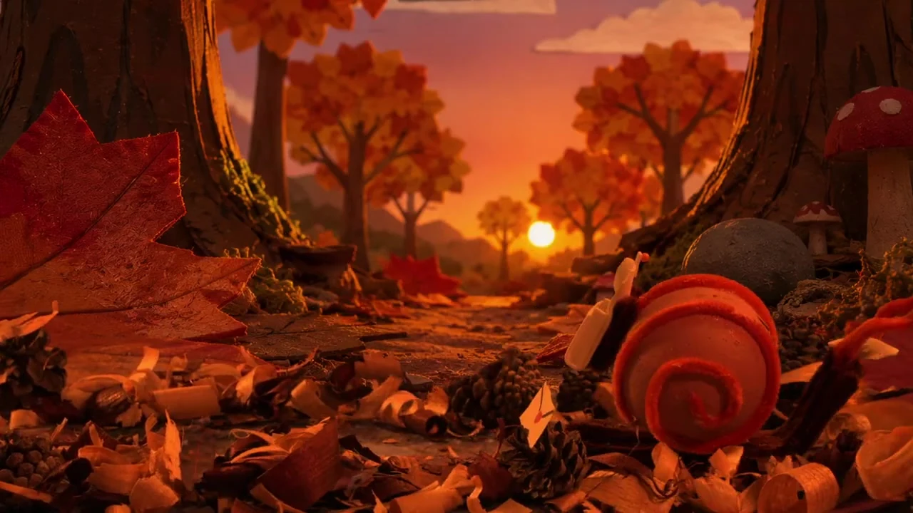

Proyectos
Sobre mí →
Cortometraje · Asistente de dirección · Motion design
ECHO
Plan de rodaje e interfaces del chip diseñadas en After Effects, para un cortometraje sobre una élite que lo ve todo.

Dirección de arte · Maqueta
Baile Cochino
Escenografía, moodboard y metáforas visuales para un relato — de la escena elegida a la maqueta expuesta.

3D · Individual
La guarida de la araña
Modelado, rig, animación e iluminación de una araña integrada en un entorno de cueva completo.

Fotomontaje
Domador de almas
Reapropiación dadaísta de Picabia — y su puesta en escena en una exposición virtual.

Stop-motion · En equipo
Lento e Inseguro
Escenografía hecha a mano, rodaje con pantalla verde y composición en DaVinci Fusion.